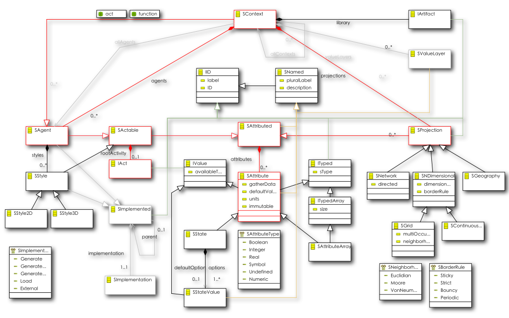

For readers familiar with UML and meta-modeling, the following diagrams give more detail on the structural design.
Our first diagram depicts the core structural design of the model.

There seems to be a lot going on here, but the basic components are pretty straightforward as we can see in the next diagram.

Core interactions are in Red. The meta-model structure is essentially a Composite pattern.
-
Every model has at its root a Context (Scape). Contexts are Agents that are capable of containing other Agents (including other contexts, naturally).
-
(Meta-level) Contexts contain (meta-level) Agents at the model (design-time) level. At runtime, (model-level) Context instances defined in a (meta-level) SContext will contain (model-level) agent instances of the defined (meta-level) SAgent. This sounds more complicated than it is, so let's look at a simple example. Suppose we create a new Context, and give it a label of "Wiki Example". Within that Context, we create an Agent and give it a label of "Individual" and another Agent with the label "Block". At runtime when we are actually executing the model we will have one WikiExample model instance which contains a number of Individuals.
-
Agents contain Attributes, such as Vision and Age. Context attributes often represent input parameters for contained agents. For example, our Wiki Agent Context might contain an Individual Count as well as a Minimum Age and Maximum Age.
-
Contexts can contain Projections (Spaces), which represent some kind of spatial or structural interaction space for the agents; either a grid, a continuous (euclidian) space, or a network (graph) or geographic space of some kind. For example, we might want to have a City that contains Blocks and that an Individual can move around within.
-
Agents are Actables and thus can contain any number of behaviors called "Actions", described in detail in the next section. Actions can describe individual behavior, and at the Context (Scape) level can define how member Agents and Projections are created.
-
Styles provide a mechanism for defining generic visualization behavior for Agents and so are also Actables. For example, an Agent might have an Action that says effectively "draw a red circle shaded red for the wealth of the agent".